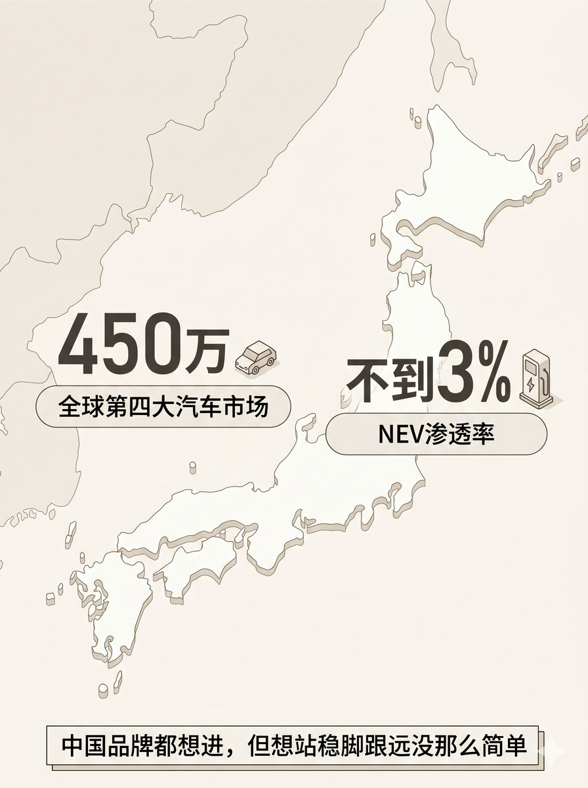
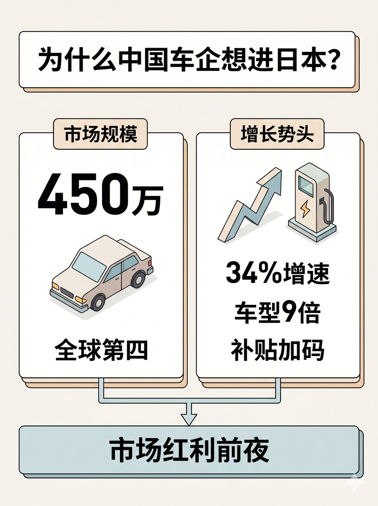

历史 Nano Banana 竖版短视频配图基线：用地图、市场符号和机会窗口表达进入日本市场的吸引力与现实张力
生成一张 3:4 竖版静态配图。 整体采用双数据对比 + 底部结论横条的结构。日本列岛地图轮廓作为全图半透明浅色背景，覆盖整张图。两个核心数据分别左右分列，悬浮在地图上方，底部有一条窄结论横条。 左侧数据区：大数字"450万"，配一个小型车辆图标，下方小字标注"全球第四大汽车市场"。 右侧数据区：大数字"不到3%"，配一个小型充电桩图标，下方小字标注"NEV渗透率"。 两个数据区之间隐含对比关系，不需要箭头，通过位置和大小的对称来体现。 底部结论横条：一条较窄的横向条，文字"中国品牌都想进，但想站稳脚跟远没那么简单"。 图中只允许出现这些文字："450万"、"不到3%"、"全球第四大汽车市场"、"NEV渗透率"、"中国品牌都想进，但想站稳脚跟远没那么简单"。 地图范围：日本列岛轮廓，抽象简化风格，不要详细行政边界，不要其他东亚国家。 不要额外新增文字，不要水印，不要"AI生成"字样，不要品牌官方 logo，不要无意义英文装饰。 整体视觉采用 clean isometric business schematic，modular business illustration with light 3D structural feel，flat illustration，light texture，理性、克制、整齐。

生成一张 3:4 竖版静态配图。 整体采用顶部标题 + 中部两张等大横向卡片并列 + 底部结论横条的结构。两张卡片分别从左下和右下通过小箭头汇入底部结论区。 顶部标题："为什么中国车企想进日本？" 左卡片标题"市场规模"，卡片内部：大数字"450万"，配车辆图标，下方"全球第四"标注。右卡片标题"增长势头"，卡片内部：上升箭头配充电桩图标，标注"34%增速"、"车型9倍"、"补贴加码"。 底部结论横条：文字"市场红利前夜"。 两张卡片之间用并列表述关系，各自底部有箭头汇向下方结论区。 图中只允许出现这些文字："为什么中国车企想进日本？"、"市场规模"、"450万"、"全球第四"、"增长势头"、"34%"、"车型9倍"、"补贴加码"、"市场红利前夜"。 不要额外新增文字，不要水印，不要"AI生成"字样，不要品牌官方 logo，不要无意义英文装饰。 整体视觉采用 clean isometric business schematic，modular business illustration with light 3D structural feel，flat illustration，light texture，理性、克制、整齐。
